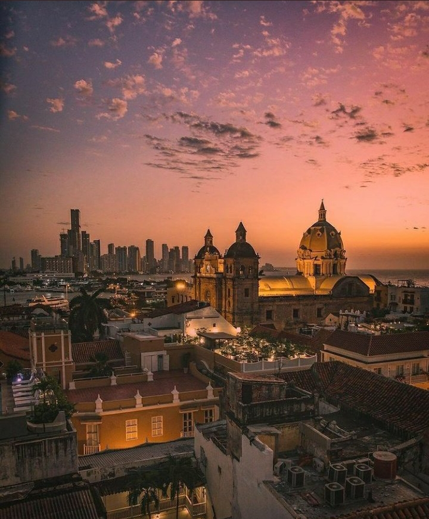

Conecta con expertos
Interactúa con arquitectos, ingenieros, urbanistas y aficionados del desarrollo urbano de Cartagena.
Únete a la comunidad de aficionados al urbanismo, arquitectura e infraestructura que sigue, analiza y comparte los proyectos que transforman nuestra ciudad.
Interactúa con arquitectos, ingenieros, urbanistas y aficionados del desarrollo urbano de Cartagena.
Sé el primero en conocer y discutir los avances de edificios, obras, infraestructura y desarrollos clave de la ciudad.
Comparte ideas, opiniones y análisis que contribuyan a una conversación urbana mejor informada para Cartagena.

Ranking y análisis de las torres más altas de Cartagena.

Seguimiento de avances de torres y proyectos residenciales.

Nuevas centralidades comerciales que transforman la ciudad.

Un proyecto que redefiniría el borde costero y el espacio público.

Renovación urbana de un sector estratégico con gran potencial.

Conectividad sostenible para una Cartagena más integrada.
Skyscrapercity Cartagena es más que un foro: es un punto de encuentro para quienes aman la ciudad y quieren verla crecer con calidad, planificación y visión.
“ Gracias a esta comunidad he aprendido muchísimo sobre los proyectos que están cambiando Cartagena. Las discusiones son serias, informadas y siempre enriquecedoras.
Suscríbete y recibe en tu correo las últimas noticias, avances y análisis sobre los proyectos urbanos de Cartagena.